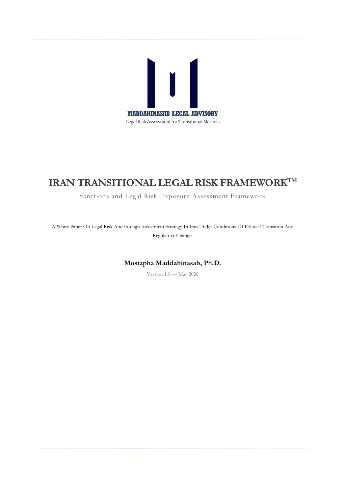

Legal Scholarship & Advisory Focus
My legal work focuses on investment law, energy law, regulatory governance, and legal risk assessment in institutionally complex and transitional environments. My academic and professional interests particularly concern foreign investment, institutional continuity, sanctions-related legal exposure, and legal due diligence in emerging markets.
Through legal scholarship and applied analytical frameworks, I examine the intersection of law, institutional change, foreign investment, and regulatory risk in energy and non-energy sectors.
Areas of Expertise
- International Investment Law
- Energy Law & Energy Transition
- Oil & Gas Law
- Foreign Investment Risk Assessment
- Legal Due Diligence
- Regulatory Governance
- Transitional Legal Risk
- Institutional and Regulatory Volatility
Advisory Publications & White Papers

Iran Transitional Legal Risk Framework™
A white paper examining the legal and institutional risks associated with foreign market entry into Iran under conditions of political transition, regulatory uncertainty, and sanctions-related complexity.
The publication introduces a structured analytical methodology for assessing institutional continuity risk, title legitimacy, enforcement volatility, corporate legacy exposure, and sanctions residual risk in transitional investment environments.
Read White Paper